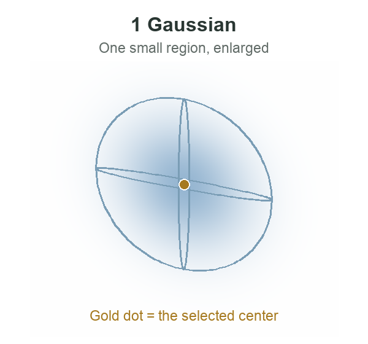
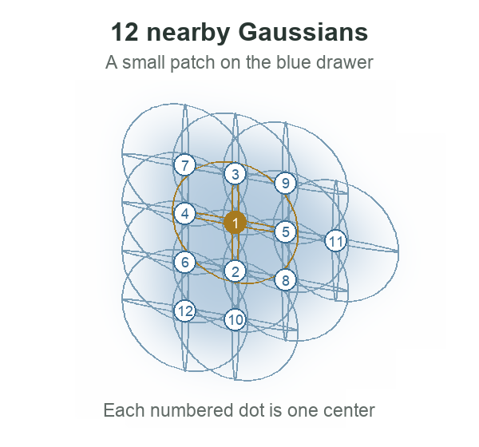
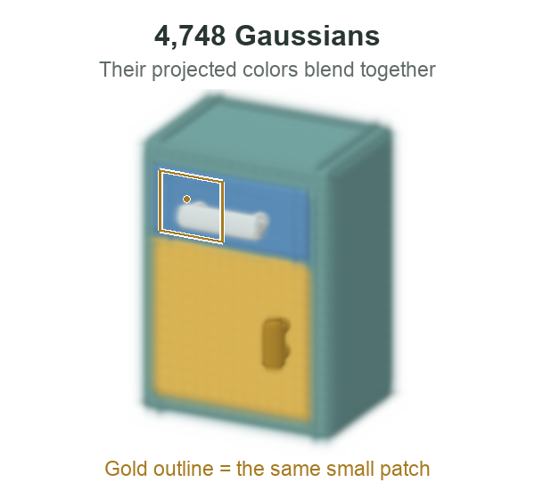

2.3 Gaussians and fields: representation
A. Representation
A mesh records connected surfaces. Gaussians and fields describe the cabinet with other kinds of 3D data. First consider what they contain; the rendering group will show how that data produces a picture.
2.3.1 Store soft 3D blobs
A 3D Gaussian representation stores many soft 3D blobs. Each has a position, size, orientation, opacity, and appearance.
The cabinet picture combines many blobs. One blue blob describes a small region near the drawer front. It can be wide along that panel but thin from front to back. Its contribution is strongest near its center and fades gradually toward the edges.






The first two views show shape guides so we can distinguish the blobs; their influence fades beyond those guides. The last view blends the blobs as a renderer does. This count belongs to our scripted teaching cabinet; different scenes use different numbers of Gaussians.
3D Gaussians names the stored elements. 3D Gaussian Splatting (3DGS) names the method studied later, which fits these elements to photographs and renders them by splatting. A generator can also produce Gaussian data. Original 3DGS project.
For now, keep the blobs fixed. Section 2.5 shows their projection and opacity with the two-blob and cabinet videos.
A related method, 2D Gaussian Splatting (2DGS), uses flat Gaussian disks placed and oriented in 3D. The cabinet comparison in Section 2.8 shows how these surface elements differ from 3D Gaussian volumes.
2.3.2 Ask a field about a location
A field assigns information to locations in space. Imagine selecting a point inside a wooden cabinet panel, then another point in the empty drawer cavity. What the field answers depends on what it describes:
- Occupancy
- Is this point inside the solid shape? For a cabinet modeled with separate walls, a point inside the wood is occupied, while a point in the empty cavity is outside the solid material. A learned occupancy field can give a probability of being inside.
- Signed distance (SDF)
- How far is this point from the nearest surface, and on which side? With the convention used here, zero lies on the surface, negative is inside the solid, and positive is outside. A point in the cavity has a positive distance to the nearest wall.
- Radiance field
- What color and density are present here? In the cabinet example, the drawer front contributes blue and blocks the view; air contributes little. Color can also depend on viewing direction.
These three fields answer different questions about the same cabinet. Occupancy and signed distance describe its shape; a radiance field supplies information for making pictures. Its density describes how a region affects visibility.
Each kind of field can be implemented in different ways. Examples include Occupancy Networks for occupancy, DeepSDF for signed distance, and NeRF for radiance fields.
Example: NeRF represents a radiance field
NeRF stands for Neural Radiance Field. It uses a neural network to supply the field’s answers: give it a 3D position and viewing direction, and it returns color and density. For our cabinet, samples near the drawer front can return blue with high density, while samples in the air return low density.
This is one specific way to represent a radiance field. Section 2.6 follows how its answers become image pixels; Section 2.9 explains how photographs teach the network those answers.
2.3.3 Summary: a map of 3D representations
We have described the same cabinet using points, connected faces, soft blobs, or answers at locations in space. This map brings those choices together.
The voxel grid introduced in Section 2.1 stores values in small 3D cells. It also connects to fields: each cell can keep an occupancy or distance value.
Ways to describe the same 3D cabinet
Representation is the information kept about the object.
Stored elements
Fields: ask about a location
Storage and field meaning can be combined. A voxel grid can store sampled distance or occupancy values.
Representation tells us what 3D information is available. In Part B: Rendering, we use that information and a virtual camera to make a picture.